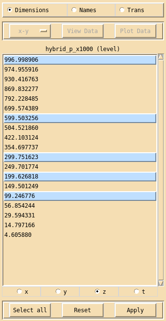

Dimension interface¶
Clicking on the Dimensions button in the main xconv window brings up the Dimension interface.
The Dimension interface is used to examine and sub-sample, the currently selected fields dimensions. Currently xconv only supports sub-sampling of the z (vertical) and t (time) dimensions.
To sub-sample dimensions, first click on the dimension you require (x, y, z or t), then highlight the dimension values that are needed, finally click on Apply. The Select all button will highlight all the dimension values. The Reset button will reset the highlighted dimension values to either their initial state if Apply has not yet been used or to the state they were in when Apply was last used.
Highlighting is performed as follows: clicking with the left mouse button will highlight that entry without changing any other highlighted entry, clicking with the middle mouse button will highlight that entry and all other entries will become unhighlighted, clicking with the right mouse button will highlight all entries between the current entry and the last entry to be highlighted, without changing any other highlighted entry.